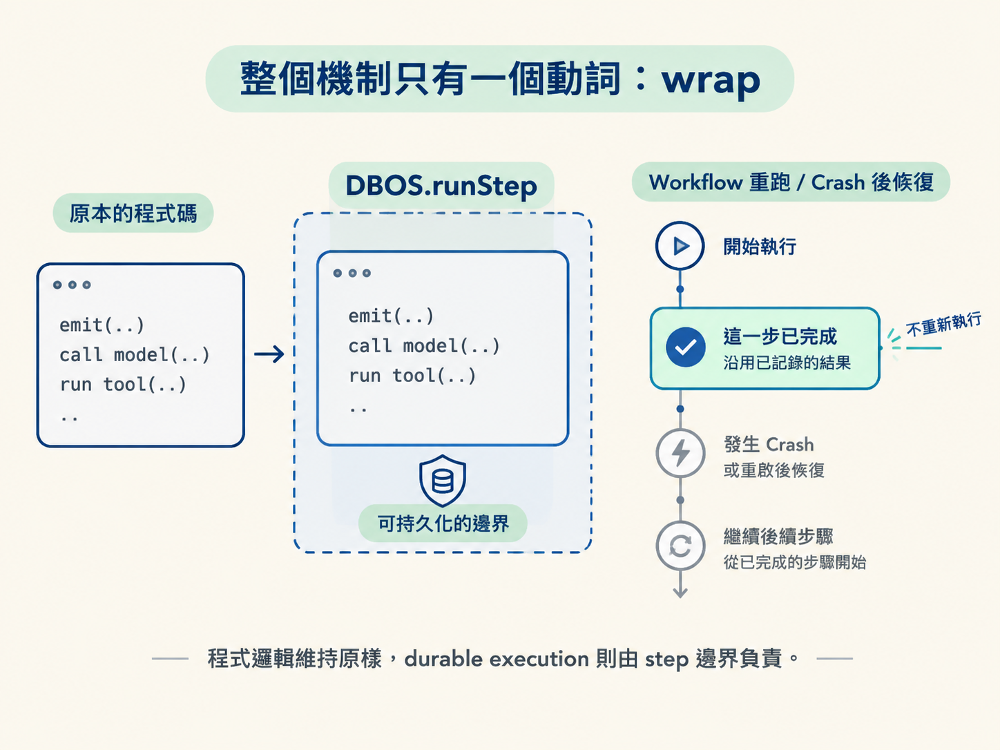
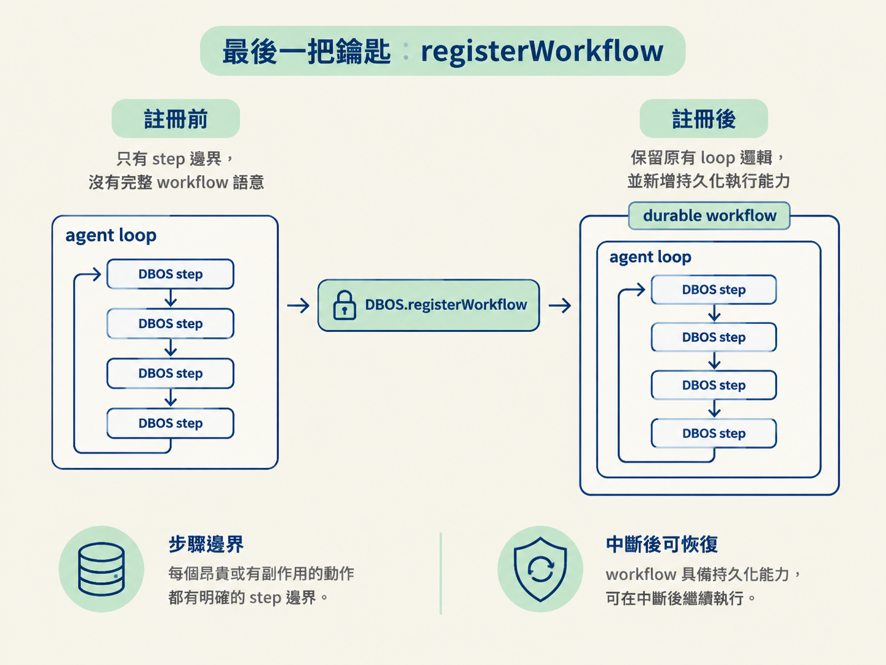

前面的 agent loop 已經能呼叫模型、執行工具，也能發出事件。但只要 workflow 在中途 crash，重新啟動時就可能再次呼叫 LLM、再次執行工具，甚至再次寫入完成或失敗事件。
這一課要補上的，就是把這些不能隨意重做的動作交給 DBOS 記住。做法很集中：判斷哪些程式碼具有非確定性或副作用，再用 DBOS.runStep 包起來，最後把外層函式註冊成 workflow。
DBOS 的核心用法很簡單：把既有程式碼放進 DBOS.runStep。原本的邏輯不用重寫，只是在外面加上一層可持久化的邊界。
import { DBOS } from "@dbos-inc/dbos-sdk";
await DBOS.runStep(async () => {
// 既有的程式碼照寫，一行都不用改
return emit({ type: "modelDone", workflowId });
}, { name: "model-done" });DBOS.runStep(callback, { name }) 會記住 callback 的執行結果。之後即使 workflow retry、suspend，或在 crash 後恢復，也能沿用已完成的 step，而不是把同一段昂貴或有副作用的程式碼再跑一次。
這也是它好用的地方：程式邏輯維持原樣，durable execution 則由 step 邊界負責。

不要把每一行都包進 step。純淨、沒有副作用，而且每次執行結果都一樣的初始化程式碼，可以留在 step 外。例如建立 agents 清單、組合 system prompt，這些工作不依賴外部狀態，也不會對外界造成改變。
真正該包的是依賴網路、時間、亂數或外部狀態的程式碼，以及昂貴或會產生副作用的動作。呼叫 LLM、執行工具、發事件，都屬於這一類。
所以判斷標準不是程式碼長不長，而是：它是否非確定（nondeterministic）、昂貴，或會改變外部狀態？
模型呼叫不能放在 workflow 外裸奔。否則 workflow 每次重啟，streamText 都可能重新執行，重複消耗 token 與費用。
const turn = await DBOS.runStep(
async () => modelTurn(workflowId, messages),
{ name: `model-turn-${stepCount}` }
);包成 step 後，DBOS 能沿用已完成的 model turn。workflow resume 時會接著往下走，而不是再次呼叫模型。
這裡容易誤會一件事：await 一個 step，不等於等待串流全部結束後才開始輸出。step 內部仍然可以 await 自己的 stream，因此瀏覽器照樣能逐字看到模型輸出；外層的 await 等的是整個 step 完成，並不會取消串流體驗。
「模型完成」與「工作完成」都會寫入資料庫，因此也要各自包成 step：
await DBOS.runStep(() => emit({ type: "modelDone", workflowId }), { name: "model-done" });
await DBOS.runStep(() => emit({ type: "completed", workflowId }), { name: "completed" });emit 本身不是冪等的：每執行一次，就會在 event_log 多寫一列。若它留在 step 外，retry 可能產生重複事件，UI 也可能出現同一則訊息兩次。
把它包進 step 後，DBOS 會記住這個具名 step 是否已完成，重試時就不會重複寫入同一個事件。
前面已經移除 execute，不再讓 SDK 自動執行工具。因此現在要由迴圈逐一處理 turn.toolCalls：每個工具呼叫各自放進 durable step，完成後再把結果補回 messages。
for (const call of turn.toolCalls) {
const output = await DBOS.runStep(
() => toolStep(workflowId, call),
{ name: `tool-${call.toolCallId}` }
);
messages.push({
role: "tool",
content: [{
type: "tool-result",
toolCallId: call.toolCallId,
toolName: call.toolName,
output: { type: "json", value: output },
}],
});
}回填給模型的 message 形狀不能隨意改。role 必須是 tool，content 的 type 必須是 tool-result，並且要帶上 toolCallId 與 toolName。工具結果則要包成 { type: "json", value: output }。
這些細節原本由 SDK 的自動執行流程處理。現在把控制權拿回來，就必須自己完成執行、持久化與 message 組裝。
最容易漏掉的是錯誤處理。workflow 底部的失敗事件同樣會寫入資料庫，因此不能直接在 workflow 裡呼叫 emit：
await DBOS.runStep(() => emit({ type: "workflowFailed", workflowId }), { name: "failed" });如果失敗事件沒有包成 step，重試時可能再次寫入相同的失敗紀錄。給它固定的 failed step 名稱，失敗簿記就能和其他副作用一樣被 DBOS 記住。
到目前為止，這些只是包著 DBOS step 的普通函式。如果外層函式沒有註冊成 workflow，step 就沒有完整的 durable workflow 語意。
把 runtime 函式交給 DBOS.registerWorkflow：
export const runAgentWorkflow = DBOS.registerWorkflow(agentWorkflow);名稱加上 Workflow 後綴是一個清楚的約定：看到它，就知道這不是普通 function，而是具有持久化執行語意的 workflow。
註冊後，原本的 loop 邏輯不變；新增的是每個昂貴或有副作用動作的 step 邊界，以及 workflow 在中斷後恢復的能力。

現在整個 loop 已經具備 durable execution：
registerWorkflow 啟動 workflow 語意。接下來只差把 server 接上這個 workflow：使用者按下送出後啟動它，瀏覽器重新開啟時再讀回完整歷史。那就是最後一課要處理的部分。